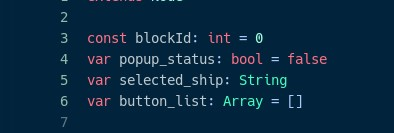
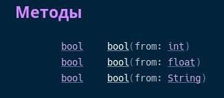

В GDScript переменные объявляться с помощью двух ключевых слов. Это ‘var’ и ‘const’

В отличии от других языков программирования, в GDScript ‘const’, обозначает не константу, а модификатор доступа. ‘var’ означает, что к переменной можно обратиться из другого объекта, а ‘const’ скрывает переменную от других объектов
Т.е. константы в Godot не являются постоянными. В рамках объекта, константы ведут себя также, как и переменные. Можно привести аналогию: ‘var’ – это ‘public’, a ‘const’ – ‘private
Далее, я буду говорить только о ‘var’, но всё тоже самое относиться и к ‘const’
После ключевого слова ‘var’, указывается название переменной. На данном этапе переменная уже объявлена. Она может принимать значения любых типов.
При объявлении можно сразу же задать значение переменной. Для этого после названия переменной пишется знак присваивания (‘=’) и значение которые мы хотим присвоить.
При этом тип данных переменной зависит от самих данных. И при перезаписи данных, тип может измениться. При каких-либо операция, типы данных также могут неявно приводиться к общему типу, если это возможно.
В Godot существуют следующие, встроенные, простые типы данных:
null – это пустой тип данных, не содержащий информации и не имеющий никакого другого значения.
bull - тип данных может содержать только истину (true) или ложь (false).
int - целочисленный тип данных может содержать только целые числа (как отрицательные, так и положительные).
float - используется для хранения значения с плавающей запятой (действительные числа).
string - последовательность символов в формате Unicode.
Также, есть, встроенные, сложные типы данных: Vector2, Rect2, Vector3, Matrix32, Plane, Quat, AABB, Matrix3, Transform, Color, Image, NodePath, RID, Object, InputEvent, Array, Dictionary
Для приведения данных к определённому типу, нужно использовать специальные функции. Эти функции не изменяют тип данных у переменной. Они возвращают новое значение

Так, например функция int(). Если применить её к типу данных bool, то вернуться 0 или 1, если к string, то вернуться все числа из строки, как число